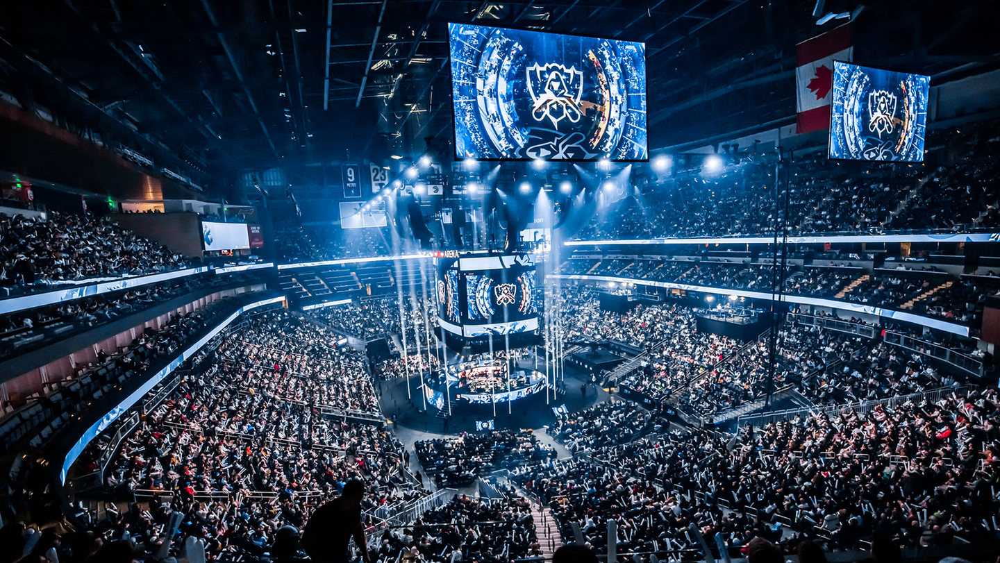

League of Legend Esport
History of League of Legend World Championship
The first League of Legend professional tournament dated back in 2011 at where the Season 1 World Championship hosted at DreamHack in Jönköping, Sweden with a $100,000 prize pool. The first world champion of League of Legend is Fnatic. The second World Championship is hosted at California, LA where the underdog Taipei Assassins conquered all the giant and take the Summoner Cup.


What Is Esport?
Esports, short for electronic sports, refers to organized, competitive video gaming where individual players or teams face off in popular titles such as League of Legends, Counter-Strike, Dota 2, and Fortnite. These competitions take place both online and in-person at large-scale events, often filling arenas and drawing millions of viewers on streaming platforms like Twitch and YouTube. Professional esports players train extensively, much like athletes in traditional sports, to master their gameplay and strategy. The esports industry has grown rapidly in recent years, attracting major sponsorships, media coverage, and prize pools worth millions of dollars. This phenomenon has led to a thriving ecosystem of teams, leagues, and fans, establishing esports as a mainstream global entertainment platform.The League of Legends (LoL) esports scene is one of the most established and expansive in the world, playing a key role in the rise of professional gaming. League of Legends has fostered a global competitive ecosystem that includes regional leagues, international tournaments, and a massive fanbase. The pinnacle of this ecosystem is the annual League of Legends World Championship (Worlds), where the top teams from around the globe compete for millions of dollars in prize money and the coveted Summoner's Cup.
Beyond the professional level, League of Legends also has a vibrant amateur and collegiate scene, contributing to the development of new talent. Teams like T1, Fnatic, and G2 Esports have become legendary names in the esports world, while the thriving streaming culture on platforms like Twitch has turned top players into global celebrities. The LoL esports ecosystem has created an interconnected web of teams, fans, sponsors, and content creators, making it one of the most influential forces in the broader esports industry.

Regions
LoL's esports ecosystem is structured around regional leagues such as the LCS (North America), LEC (Europe), LCK (South Korea), LPL (China), VCS (Vietnam), etc... which host regular seasons, playoffs, and serve as qualifiers for Worlds. These leagues feature franchised teams with top-tier players, sponsorships, and professional coaching staff, akin to traditional sports organizations. Riot Games also plays a direct role in managing the competitive scene, ensuring consistency in league operations, broadcasting, and fan engagement.
Right Now
The 2024 League of Legends World Championship, or Worlds Season 14, is in full swing, showcasing the best teams from around the globe. Held across major European cities like Berlin, Paris, and London, the event began on September 25 with the Play-In stage. This year, 20 teams compete, with the Play-In featuring teams from regions like Europe, North America, Latin America, Brazil, and Vietnam fighting for a spot in the main event.
The Swiss Stage follows, where the top 16 teams (including those from the LCK, LPL, and LCS) compete in a unique format where teams with similar records face off, advancing or being eliminated based on a best-of-three or best-of-one series. From here, the top eight teams advance to the Knockout Stage, which is a single-elimination best-of-five format. All the teams that headed to the Knockout Stage include: (Korean) T1, Gen.G, Hanwha Life Esports, (Chinese) Weibo Gaming, Bilibili Gaming, LNG Esports, Top Esports, (North America) FlyQuest.
The tournament's schedule is packed with thrilling matches, leading up to the Semi-Finals on October 26th at the Adidas Arena in London. Notable teams like Gen.G, T1, BLG and Weibo Gaming are among the frontrunners as they are the remaining teams in this tournament. The Semi-Finals is very special because both of them are intra-regional matchups. BLG and Weibo Gaming, the two Chinese teams, Gen.G and T1, the two Korean teams will battle to represent their region in the Grand-Finals.
After that, the whole League of Legend community will join together on November 2nd to witness the king of League of Legend being crowned as the Grand-Finals will be played at the O2 Arena in London.
This year's Worlds continues to captivate fans with intense competition, strategic gameplay, and electrifying matchups, making it one of the most anticipated esports events of 2024.

Best Player
Lee Sang-hyeok, some people called the Unkillable Demon King, some people called him the GOAT, but we all known him as "Faker". He is one of the few people in this world that can call themselves the undisputed best player in their relative sport. 5 times World Champion, 2 times Mid-Season Invitational Champion, Esport World Cup Champion, 10 times LCK Champion, etc... he's done it all, he conquered the League of Legend professional scene multiple times in his career. He's also listed as the offical living treasures of Korea. He's not stopping yet as he's still competing in the World Championship and will face against the current LCK Champion Gen.G at the Semi-Finals in the upcoming Saturday. Despite his legendary status, he avoids excessive luxury, living modestly compared to many top-tier athletes or celebrities. His focus remains on improving as a player and maintaining his competitive edge, while his commitment to his team and work ethic continue to inspire fans globally.